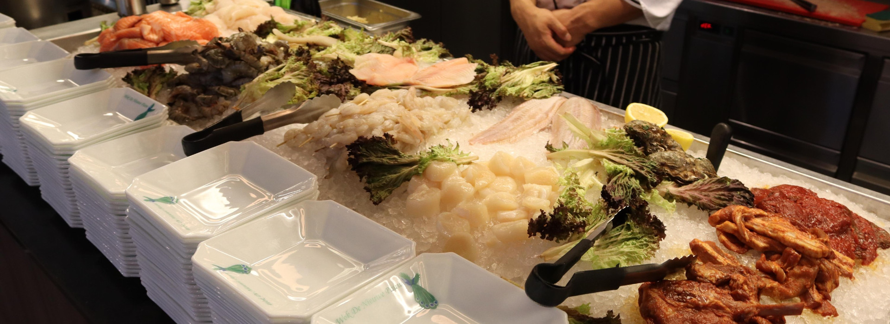
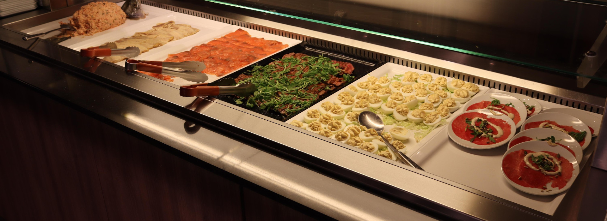
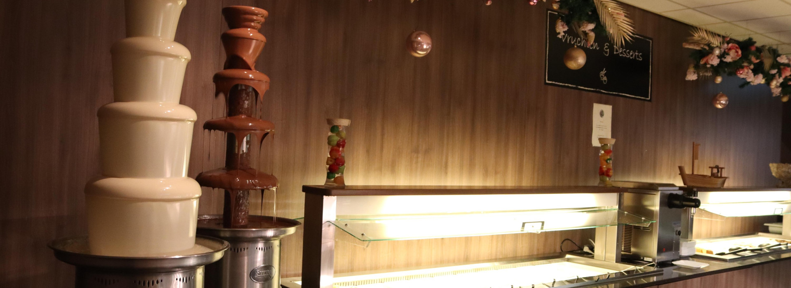
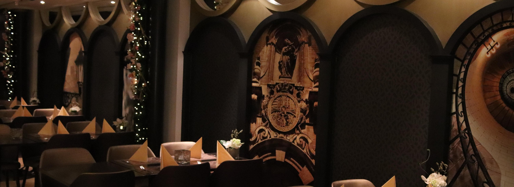
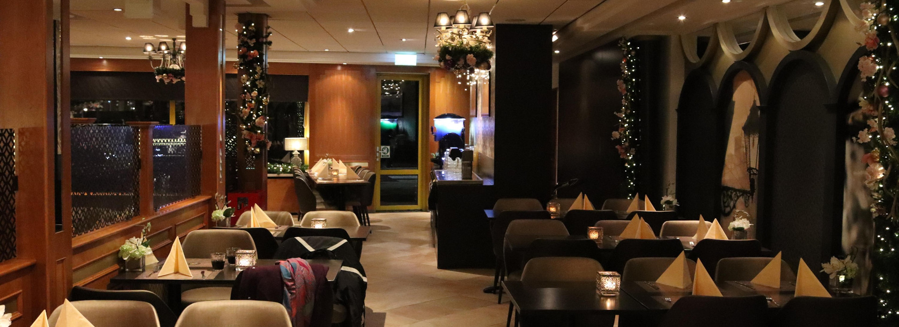
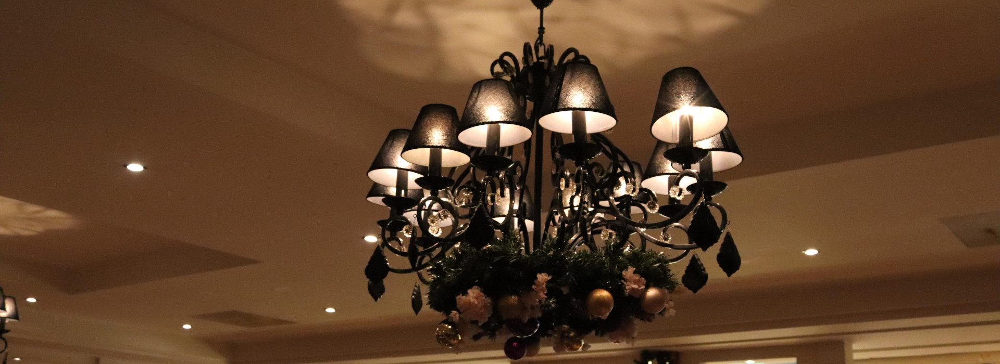
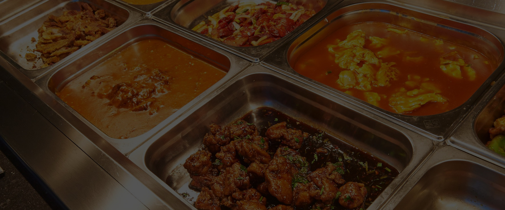
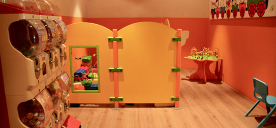

2uur
all you can eat & drink
- maandag t/m donderdag
- € 38,50
- vrijdag t/m zondag
- € 41,50

Wok- en wereldbuffet in Leerdam
All you can eat & drink: van oosterse specialiteiten tot Franse en Italiaanse keuken, vlees en verse vis, huisgemaakte patisserie en de grote chocoladefontein.
Voor ieder wat wils is ons doel. Eten waarmee u een avontuur beleeft en dat u steeds nieuwsgieriger maakt. Proeven van vele internationale keukens en op één avond overspringen van het ene land op het andere.
Van onze oriëntaalse specialiteiten naar de Franse keuken, en van de Italiaanse keuken naar heerlijke stukken vlees en verse vis. Onze huisgemaakte patisserie als dessert om van weg te dromen, en de grote chocoladefontein voor de echte chocoladeliefhebber.
Ook kinderen eten gezellig mee: we hebben een sfeervolle speelruimte waar ze veilig kunnen spelen en veel plezier maken.
Verkozen tot leukste restaurant van gemeente Vijfheerenlanden







U betaalt voor de tijdsduur van uw verblijf, niet voor de hoeveelheid eten. Vooraf betaalt u het vaste bedrag voor het gekozen arrangement; daarna maakt u onbeperkt gebruik van het internationale buffet, de frisdrankenbar, koffie, cappuccino en thee. De arrangementen beginnen bij 2 uur en lopen per half uur op.
all you can eat & drink
all you can eat & drink
all you can eat & drink
€ 3,- per levensjaar
Voor kinderen tot en met 11 jaar.
De gehele avond (van 17:00 uur tot sluitingstijd buffet) all you can eat & drink, inclusief bier, wijn, frisdranken, sappen, smoothies, koffie en thee.
Het VIP arrangement is alleen mogelijk als de gehele groep er gebruik van maakt.
25 & 26 december
All you can eat in feestelijke stijl. Geniet deze feestdagen van ons all you can eat wokbuffet, inclusief frisdranken, sappen, smoothies, huiswijnen, tapbier, koffie en thee. Laat u verrassen door de smaken van ons uitgebreide kerstbuffet en feestelijke gerechten.
Reserveer uw kersttafel11:30 tot 14:30 uur
Op de dag van je verjaardag krijg je 50% korting op je eigen maaltijd. Het enige wat je hoeft te doen, is je legitimatie laten zien.
Chinees afhalen dagelijks van 13:00 tot 21:00 uur, sushi van 14:00 tot 21:00 uur. Bestel telefonisch op 0345 613 979 of online.
Gerechten worden standaard geserveerd met witte rijst. In plaats van witte rijst nasi of bami: € 1,00 meerprijs. Mihoen of Chinese bami: vanaf € 3,00 meerprijs. (V) = vegetarisch. Stel gerust uw vragen over allergenen, speciale diëten of vegetarische mogelijkheden.
Onder voorbehoud van drukfouten en prijswijzigingen. Liever de originele kaart? Afhaalmenu (pdf) · Sushikaart (pdf)
De Nieuwe Pauw verzorgt de catering voor uw particuliere en zakelijke gelegenheden. Hieronder drie suggesties; een catering op maat kan natuurlijk ook. Neem daarvoor contact met ons op.
€ 21,50 p.p.*
€ 23,50 p.p.*
€ 25,50 p.p.*
* Exclusief borden en bestek (€ 1,50 p.p.). Soep bij de catering is mogelijk. Afhaalbakjes € 0,50 per stuk (indien nodig, vooraf melden). Bel 0345 613 979 voor meer informatie.
Wij zijn wereld/Chinees/Indisch restaurant De Nieuwe Pauw en zoeken een gepassioneerde zelfstandig werkend kok om ons keukenteam te versterken. Je werkt onder leiding van onze chef-kok of eigenaar, maar je kunt de keuken ook alleen draaiende houden. Je werkt samen met je collega-kok en stuurt indien nodig keukenhulp aan. Je werkt in het weekend en bent overdag en 's avonds beschikbaar; werkuren en rooster zijn flexibel.
Interesse? Mail naar info@denieuwepauw.nl of bel 0345 613 979.
0345 613 979info@denieuwepauw.nl
U kunt de auto voor ons restaurant parkeren. Is het daar vol, dan zijn er voldoende extra parkeerplaatsen in de buurt, bijvoorbeeld aan de Populierstraat. Parkeren is hier gratis.
| Maandag | 17:00 - 22:00 |
| Dinsdag | 17:00 - 22:00 |
| Woensdag | 17:00 - 22:00 |
| Donderdag | 17:00 - 22:00 |
| Vrijdag | 17:00 - 22:00 |
| Zaterdag | 16:00 - 22:00 |
| Zondag | 16:00 - 22:00 |
| Chinees | dagelijks 13:00 - 21:00 |
| Sushi | dagelijks 14:00 - 21:00 |